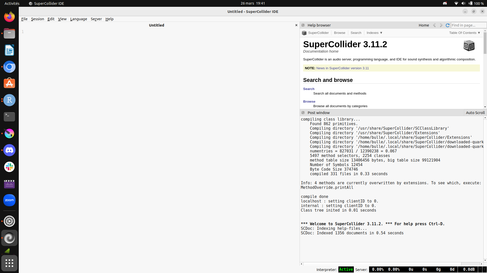

Livecoding avec SuperColider et FoxDot
HEY ! Me revoilà pour un post sans 

Le LiveCoding c’est quoi ?
J’ai découvert le LiveCoding aux universités d’hiver du Bib, en février, grâce à un atelier d’initiation à la musique algorythmique où j’ai découvert SuperCollider et FoxDot et un autre de LiveCoding collaboratif.
Du coup le principe c’est de coder de la musique voilà tout est dit au revoir fin du post lol non non je déconne j’ai fait deux ateliers, un avec Nina et l’autre Ellie, faudra que je retrouve les noms et liens, bon on attaque !
Installation de SuperColider et FoxDot
Bon je te laisse un peu gérer cette partie, on peut trouver des tutos genre ça : https://foxdot681713046.wordpress.com/installation/
Mais en gros t’installes dans cet ordre :
-
Python
-
SuperColider
-
FoxDot
Quand tout est ok (ou pour savoir si ça l’est)
Lancement de SuperCollider et FoxDot
Sur mon Ubuntu ça, l’IDE de SuperCollider ça donne ça :
Du coup si jamais y a des bugs ben il vous le dit dans l’écran de droite, là c’est quand ça fonctionne bien mais j’avais eu des soucis avec la carte audio et jack, j’avais du installer qjackctl pour configurer correctement ma carte audio.
-
Lance l’IDE SuperCollider
-
Clique sur
Serverpuis surBoot Server -
Écris la commande
FoxDot.start;dans la fenêtre de droite puis exécute la (Ctrl+Entrée) -
Ouvre un terminal er exécute la commande
FoxDot
Là normalement c’est good !
En vidéo ça donne ça :
Et voilà, t’es prêt.e à LiveCoder !
Quelques commandes de LiveCode
Donc là tu vas écrire de la musique en Python dans FoxDot. J’y connais pas grand chose mais je vais mettre les quelques trucs que j’ai compris.
Le tempo
Clock.bpm = 100
Tu peux mettre cette ligne au début de ton code, ça te permettra de contrôler le tempo à tout moment en changeant la valeur.
La percu
Y parait que c’est un peu la base, du coup on va commencer par écrire une ligne de percu.
On va lui choisir un nom, par exemple p1, ce qui nous permettra d’agir dessus,
de l’arrêter avec p1.stop() par exemple, et on va utiliser la fonction
play() pour jouer cette ligne (tu l’avais pas vu venir celle là hin :P).
Maieuhhhhh on met quoi dans play() ?
Pour afficher toutes les possibilités :
print(Samples)
Ce qui va afficher dans la fenêtre en dessous :
'!': Yeah!
'#': Crash
'$': Beatbox
'%': Noise bursts
'&': Chime
'*': Clap
'+': Clicks
'-': Hi hat closed
'/': Reverse sounds
'1': Vocals (One)
'2': Vocals (Two)
'3': Vocals (Three)
'4': Vocals (Four)
':': Hi-hats
'=': Hi hat open
'@': Gameboy noise
Je mets que les premiers mais la liste est longue.
Du coup la première ligne de percu et son stop associé :
p1 >> play("x-o-")
p1.stop()
Alors moi ce que je kiffe c’est les mélodies, pas vraiment le truc des LiveCodeureuse en général :P , mais pas grave on va partir de
LiveCoding collaboratif avec TROOP